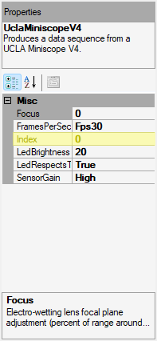
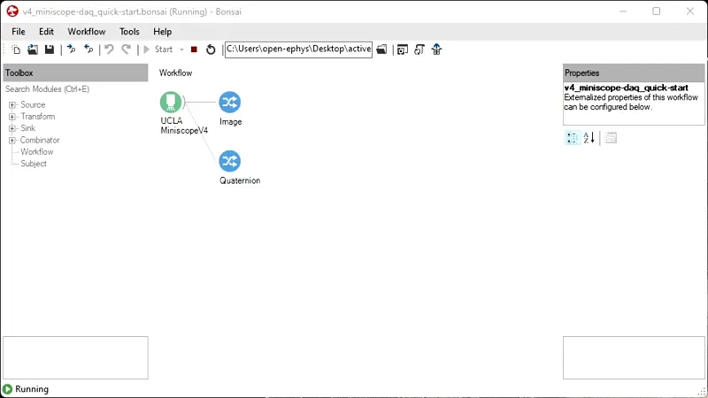
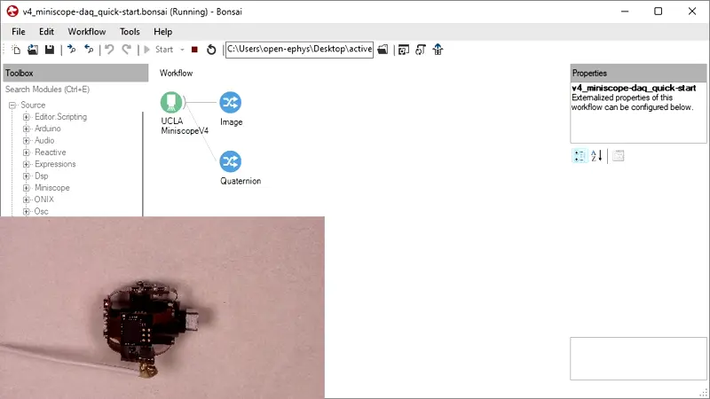
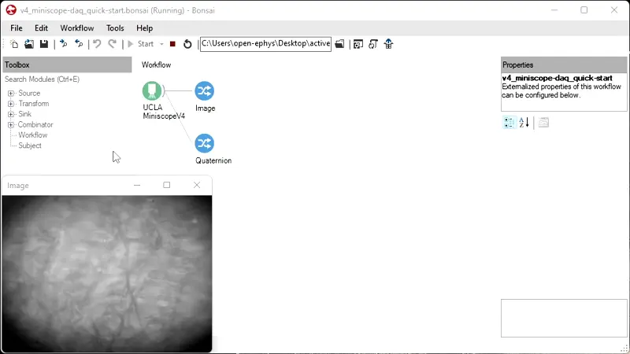
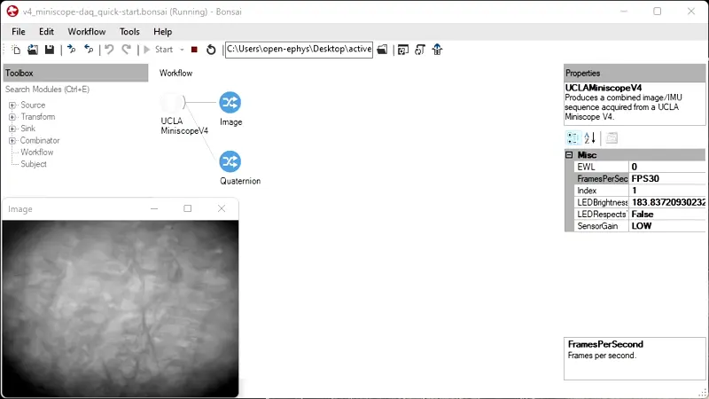
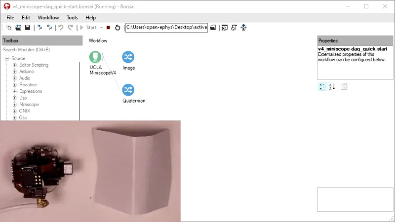
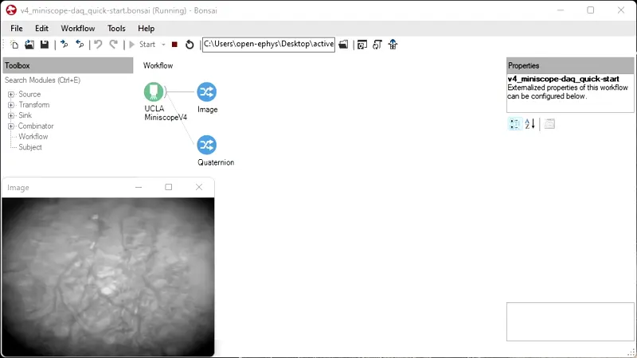

Interact with the UCLA Miniscope v4 Through Bonsai#
Download the following workflow (.bonsai file) and open it with Bonsai:

 uclaminiscopev4-miniscopedaq-quick.bonsai
uclaminiscopev4-miniscopedaq-quick.bonsai
Set the
UCLAMiniscopeV4operator’sIndexproperty to the value that corresponds to the index of your miniscope.Set the
Indexvalue by clicking on the ... dropdown available at theIndexfield that appears in the Properties pane after left-clicking theUCLAMiniscopeV4node.Click Scan and choose from one of the indices that appear. This might take time if many physical or virtual camera devices are connected to your computer.
Click Ok.
Note
If there are multiple miniscopes connected to your PC (including laptop webcams), finding the correct index value might involve an iterative trial-and-error process. Try starting the workflow now [1] to confirm the selected index is correct.
Start the Bonsai workflow [1] and test various features:
Real-time Data Visualization
- Image Data:
Double left-click the
Imagenode. This displays a real-time visualization of image data from the sensor. Attenuate the sensor’s exposure to ambient light or try imaging a target. Confirm that theImagenode visualizer comports with expectations:- Orientation Data:
Double left-click the
Quaternionnode. This displays a real-time visualization of quarternion data which represents the miniscope’s orientation. Right-click the visualization, and left-click the drop-down menu. Set the value in theHistory Lengthfield to 100. Reorient the UCLA Miniscope v4. Confirm the quarternion visualization responds accordingly:
UCLA Miniscope v4 Settings
Note
When adjusting the Frame Rate and Sensor Gain settings, avoid under- or over- exposing the sensor.
To adjust the Dynamic Imaging Depth setting, the UCLA Miniscope v4 must be fully assembled.
Left-click the
UCLAMiniscopeV4node.- Frame Rate:
Change the
FramesPerSecondvalue by left-clicking the corresponding field’s drop-down menu located in the Properties pane and selecting a different option. Frame rate and exposure-duration-per-frame are inversely related, so higher frame rates produce darker images. Use this information and look at theImagenode visualizer to confirm that the frame rate adjusts according to theFramesPerSecondvalue.A discerning eye can also notice changes in frame rate, but that requires a moving image.
- Sensor Gain:
Change the
SensorGainvalue by left-clicking the corresponding field’s drop-down menu located in the Properties pane and selecting a different option. Look at theImagenode visualizer to confirm that the sensor’s gain is adjusted according to the value ofSensorGainvalue.- Excitation Light Intensity:
Change the
LEDBrightnessvalue by left-clicking the corresponding field’s drop-down menu located in the Properties pane and sliding the scrollbar. Confirm that the intensity of the excitation light adjusts according to theLEDBrightnessvalue.- Dynamic Focusing:
Place the assembled miniscope approximately its working distance away from an imaging target (e.g. a Kimwipe). Change the
EWLvalue by left-clicking the corresponding field’s drop-down menu located in the Properties pane and selecting a different option. Look at theImagenode visualizer moves in-and-out according to theEWLvalue.If the imaging target does not enter the depth of focus, try readjusting the distance of the miniscope from the imaging target and performing the test again. If the working distance does not adjust, try reassembling the EWL module according to the Assembly instructions and repeating this part.
{kind=link}
{kind=link}
{kind=link}
{kind=link}
{kind=link}
{kind=link}